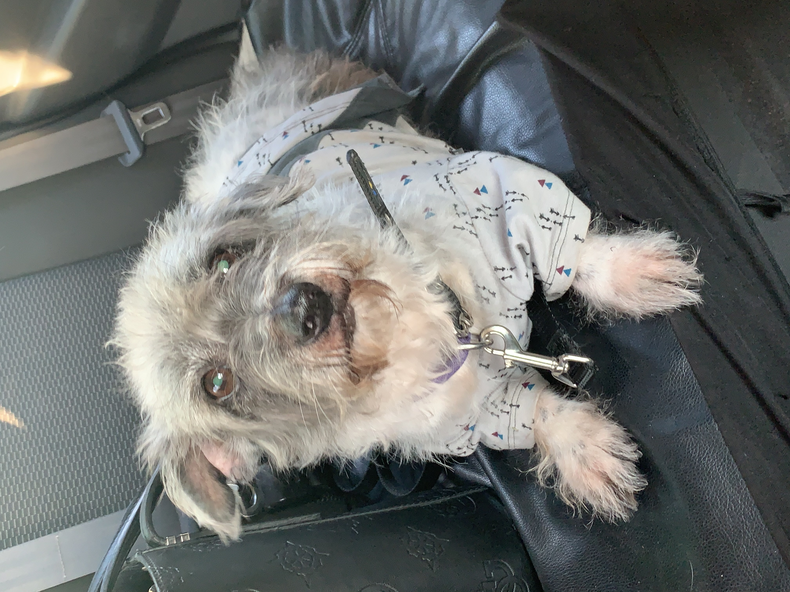

El es mi primera mascota, se llama principe, tiene 10 años, el es muy especial para mi porque ha estado conmigo desde que nació, yo todavia era muy pequeña pero recuerdo que su mamá mi mascota pero despues falleció.
 Ella es mi segunda mascota se llama staisy, es la más pequeña, tiene un año de edad, a ella la adopte cuando era bebé. Es muy importante para mi,ella siempre me da de su amor, aparte de que su personalidad se parece mucho a la mia.
Julieta Rodriguez Solano
Soy una persona dedicada, crativa y me gusta obtener todo lo que me proponga